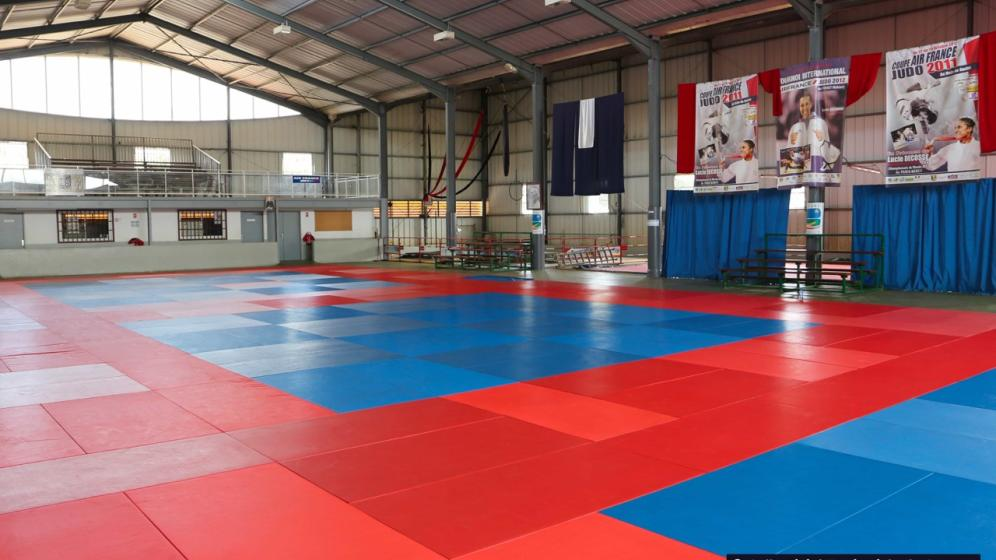
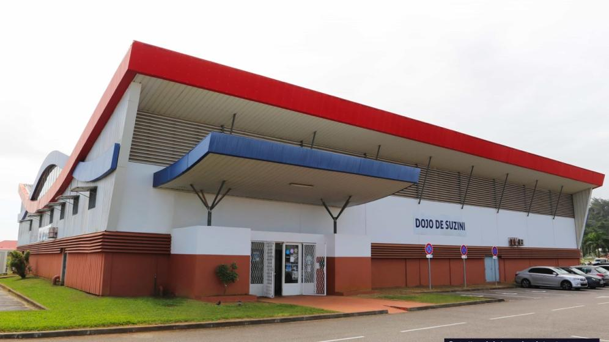

BIENVENUE AU DOJO DE SUZINI
UN LIEU.
DES RENCONTRES.
LE JUDO.
Sur les tatamis de Suzini et dans les clubs de Guyane,
une même passion nous rassemble.

LE DOJO DE SUZINI · GUYANE01 / UN DOJO, UNE HISTOIRE
LE RENDEZ-VOUS
EST À SUZINI.
Un lieu pour pratiquer, se rencontrer et faire grandir le judo en Guyane.
Entraînements, stages et compétitions : le dojo réunit celles et ceux qui font vivre les arts martiaux. Découvrez le lieu et retrouvez les rendez-vous de la ligue.
02 / À VIVRE ENSEMBLE
LES PROCHAINS
RENDEZ-VOUS.
Une compétition, un stage, une rencontre.
Trouvez votre prochaine occasion de venir.
LE CALENDRIER SE PRÉPARE
Les prochaines dates arrivent ici.
Les événements seront affichés après validation du calendrier par la ligue. Chaque fiche précisera le lieu, le public et les modalités d’inscription.
03 / LE JUDO PRÈS DE CHEZ VOUS
UN TERRITOIRE.
DES CLUBS.
Votre premier salut commence près de chez vous.
Explorez les clubs par commune.
04 / LA VIE DE LA LIGUE
AVANCER.
SE SOUVENIR.
05 / LES INFORMATIONS UTILES
PRATIQUER.
PROGRESSER.
Résultats & compétitions +
Les résultats actualisés seront ajoutés par la ligue. Les publications anciennes restent consultables dans le journal historique.
Consulter les archives ↗Formations & stages +
Le calendrier des formations, les conditions d’accès et les fiches d’inscription seront renseignés après validation par la ligue.
Se renseigner auprès de la ligue ↗Documents à télécharger +
Cet espace accueillera les documents officiels à jour : règlements, dossiers d’inscription et informations pratiques. Aucun document de saison n’a encore été validé pour cette maquette.
La ligue & ses partenaires +
La présentation de l’équipe dirigeante et les logos des partenaires seront intégrés après confirmation par la ligue.
Consulter le site historique ↗LE PROCHAIN RENDEZ-VOUS COMMENCE ICI.
ON SE RETROUVE
SUR LE TATAMI ?
Dojo de Suzini · Guyane
Contact issu de l’annuaire France Judo, à confirmer pour la mise en ligne.